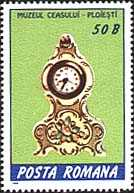
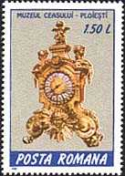
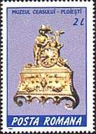
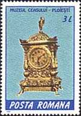
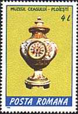
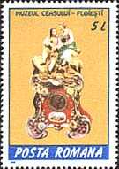

|
Muzeul
Ceasului, un muzeu unic Rom‚nia, a fost inaugurat Ón anul 1963, Óntr-o
sal„ a
Palatului Culturii din Ploie∫ti. Muzeul Ó∫i datoreaz„ existen˛a profesorului Nicolae
Simache,
director al Muzeului de Istorie Óntre anii 1954 - 1971.
Colec˛ia de
ceasuri a fost mutat„ ulterior Óntr-o cl„dire construit„ la sf‚r∫itul secolului al
XIX-lea. Aceast„ cl„dire a apar˛inut fostului prefect al jude˛ului
Prahova, Luca Elefterescu, cunoscut politician conservator, activ Ón primele
decenii ale secolului al XX-lea. Muzeul Ó∫i propune s„ Ó∫i introduc„
vizitatorii Ón tematica evolu˛iei mijloacelor de m„surare a timpului, de la primele
"ceasuri" cu cadranele solare, ceasurile arz„toare, cu ap„ sau cu
nisip, p‚n„ la
ceasornicele mecanice "antice" ∫i cele moderne.
Minunate
lucr„ri de
orologerie sunt adeseori nu numai opera unor vesti˛i me∫teri
ceasornicari,
ci ∫i a oamenilor de art„, care au contribuit la prezentarea lor c‚t mai
atr„g„toare, cre‚nd adev„rate stiluri.
V„ prezent„m Ón cele ce urmeaz„ c‚teva capodopere din
colec˛ia muzeului, f„c‚nd apel pentru aceasta la emisiunea de ∫ase m„rci po∫tale
rom‚ne∫ti, ap„rut„ pe data de 20 mai 1988 ∫i intitulat„ "Muzeul Ceasului - Ploie∫ti".
 |
 |
 |
- 50 B. Ceas de por˛elan
din Arad (secolul XX)
- 1.50 L. Ceas francez
de bronz (secolul XIX)
- 2 L. Ceas francez de
bronz (secolul XIX)
 |
 |
 |
- 3 L. Ceas gotic de
bronz (secolul XIX)
- 4 L. Ceas de por˛elan
saxon (secolul XIX)
- 5 L. Ceas de por˛elan
din Bohemia (secolul XIX)
Le recomand„m tuturor celor dornici s„ afle mai multe lucruri despre acest interesant muzeu
s„ viziteze situl care Ói este dedicat (apasa˛i
aici).
Amatorii de filatelie tematic„ sunt invita˛i sa
viziteze si situl premiat intitulat
Pictura ∫i Arta pe M„rcile Po∫tale, sit a c„rui
dezvoltare este sprijinit„ de firma Impulse Romania srl, specializata
in comercializarea ceasurilor
elvetiene.
Published:
06/19/2001. Revised:
02/14/2018
.
Copyright © 2001 - 2018 by Victor Manta, Switzerland.
All rights reserved worldwide. |

Click the banner above to
visit the site |
|